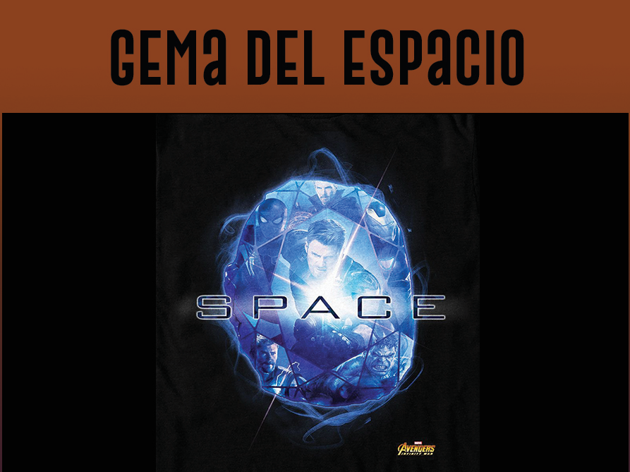
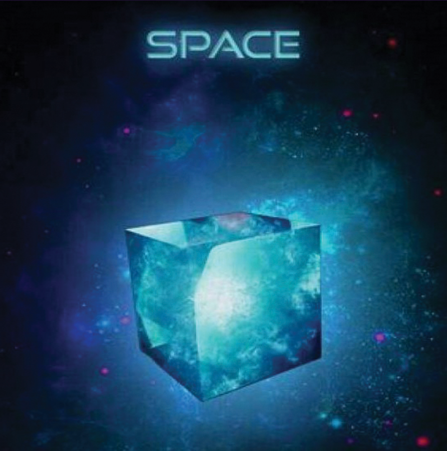

|  |
Color: azul Unidad de contención original: Teseracto Capaz de proporcionar acceso instantáneo a cualquier lugar en todo el universo, si se usa correctamente, además de otorgar la capacidad de poder estar presente en varios lugares a la vez. El único elemento que componía el Teseracto también se ha utilizado para crear armamento avanzado por razas como los seres humanos. Esta gema jugó un papel importante en el desarrollo de la humanidad, más concretamente en el comienzo de la era de superhéroes, trayendo la atención de grandes fuerzas como Johann Schmidt y Thanos, ambos de los cuales trataron de usar el poder del Teseracto para su propias intenciones siniestras. Apareció por primera vez en Capitán América: El primer vengador, bajo en poder de johann schmidt |
|  |